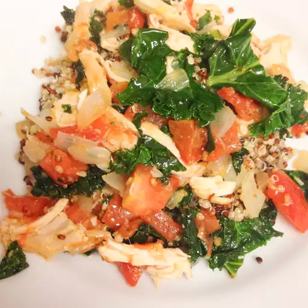

Chicken with Quinoa and Veggies

Description
A quick chicken recipe that can be adjusted to include whatever veg you have available. Cooking times may vary depending on how thick the chicken and veg is cut.
| Prep Time |
Cook Time |
Total Time |
Servings |
| 30 mins |
30 mins |
1 hour |
4 |
Ingredients
- 2 cups chicken broth
- 1 cup rinsed quinoa
- 4 tablespoons extra-virgin olive oil, divided
- 2 garlic scapes, chopped
- 1 small onion, chopped
- 2 skinless, boneless chicken breast halves - cut into strips
- 1 zucchini, diced
- 1 tomato, diced
- 4 ounces crumbled feta cheese
- 8 fresh basil leaves
- 1 tablespoon lime juice
Directions
- Bring chicken broth and quinoa to a boil in a saucepan. Reduce heat to a simmer, cover, and cook until broth is absorbed, quinoa is fluffy, and the white line is visible in the grain, about 12 minutes.
- Meanwhile, heat 2 tablespoons olive oil in a skillet. Cook and stir garlic scapes and onion in hot oil until onion is translucent, about 5 minutes. Stir in chicken breast strips and cook until chicken is still slightly pink in the middle, about 5 more minutes. Remove chicken to a plate and set aside.
- Pour remaining 2 tablespoons olive oil in the skillet. Cook and stir zucchini and tomato in hot oil until zucchini is tender, 5 to 8 minutes. Return chicken to the skillet and sprinkle with feta cheese, basil leaves, and lime juice. Cook until chicken is fully cooked and hot, about 10 more minutes. Serve over hot quinoa.
Home